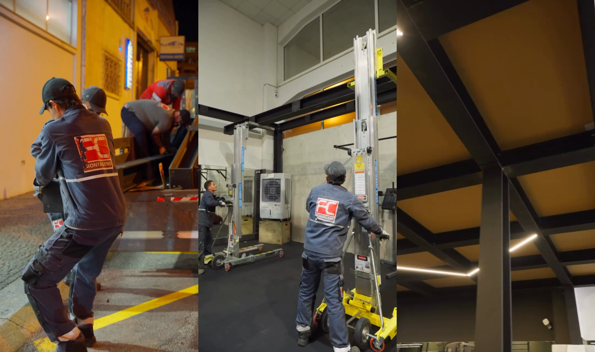

Servicios
metalmecánicos.
Fabricación, montaje y mantenimiento industrial.
Servicios
De la fabricación al trabajo en obra.

Mantenimiento industrial
Mantenimiento mecánico y eléctrico de equipos industriales.
Solicitar presupuesto
Intervenciones industriales
Reparaciones y modificaciones en instalaciones y equipos.
Solicitar presupuestoTrabajos
El trabajo, de cerca.
El equipo en acción, los detalles de ejecución y las estructuras en su ubicación.

Montaje y mantenimiento
Tuberías en una unidad industrial
Preparación, montaje y mantenimiento de tuberías, con el equipo de FC Montagens en obra.
Ver trabajo ↗
Estructura metálica
Montaje de estructuras metálicas
Transporte, elevación y montaje de estructuras metálicas.
Ver trabajo ↗Ejecución y detalles
Una selección de imágenes de fabricación, montaje e instalaciones.


La empresa
Un equipo en obra.
Fundada en 2018 y con sede en Matosinhos, FC Montagens presta servicios de fabricación, montaje y mantenimiento industrial a nivel internacional.
Desde tuberías hasta estructuras metálicas, conozca nuestra actividad a través de las imágenes de los trabajos.
Cuéntenos su proyecto ↗Contacto
¿Qué necesita realizar?
Describa el trabajo, la ubicación y las fechas previstas. Para enviar planos o fotografías, contacte por correo electrónico.
- Correo electrónico
- geral@fcmontagens.pt
- Teléfono
- +351 22 971 2063+351 913 171 884
- Dirección
- Rua António Ramalho, 595
4460-241 Senhora da Hora
Matosinhos, Portugal - Horario
- De lunes a viernes
09:00–13:00 · 14:00–18:00 - Empleo
- Enviar candidatura ↗